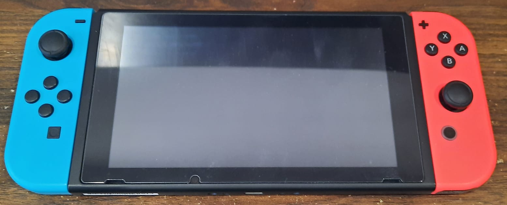
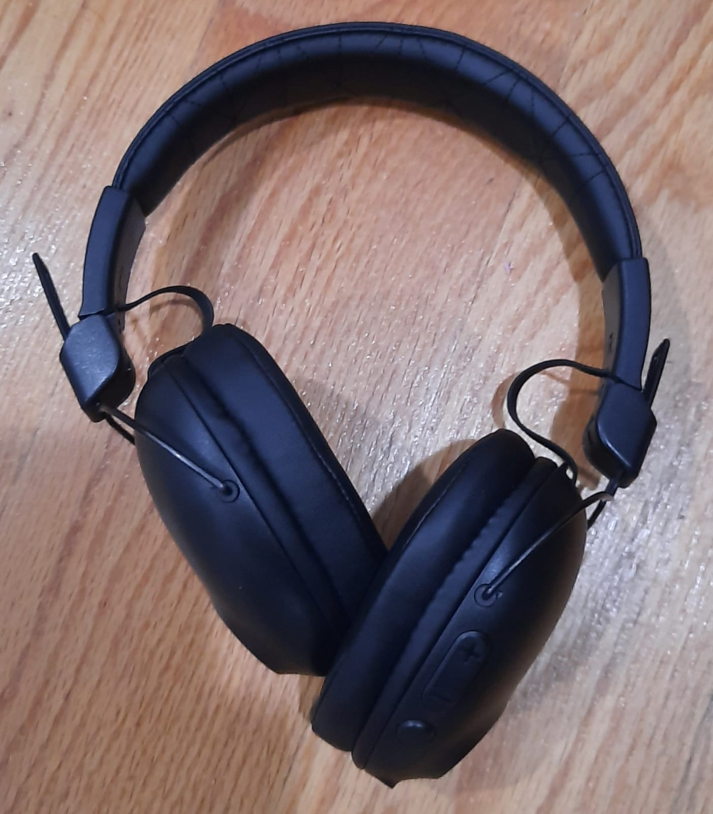
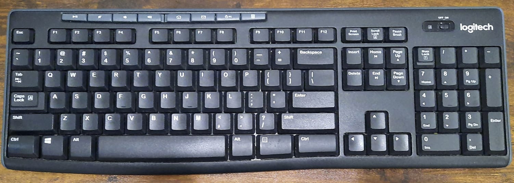
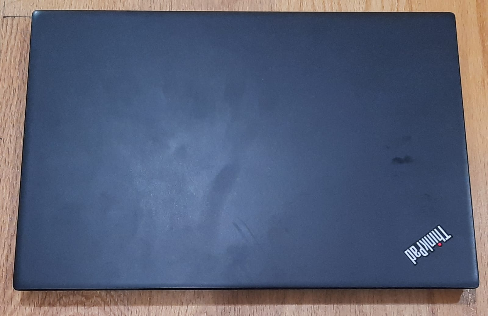
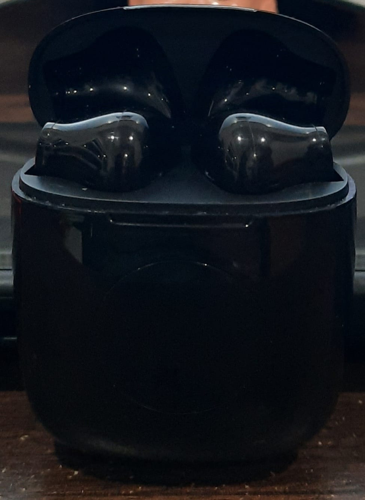

CASE STUDY BETWEEN GOOGLE LENS AND MOBILENET

VS
Test Image 1 -

Output on Google Lens - Nintendo Switch
Output on MobileNet - Television System
GOOGLE LENS - 1
MobileNet - 0
Test Image 2 -

Output on Google Lens - JLab Studio Pro
Output on MobileNet - Vaccum Cleaner
GOOGLE LENS - 2
MobileNet - 0
Test Image 3 -

Output on Google Lens - Logitech K270
Output on MobileNet - Computer Keyboard
GOOGLE LENS - 3
MobileNet - 1
Test Image 4 -

Output on Google Lens - Lenovo Thinkpad
Output on MobileNet - Television
GOOGLE LENS - 4
MobileNet - 1
Test Image 5 -

Output on Google Lens - Wireless Earbuds
Output on MobileNet - Telephone
GOOGLE LENS - 5
MobileNet - 1
According to my Case Study, Google Lens is a more accurate image search system than MobileNet